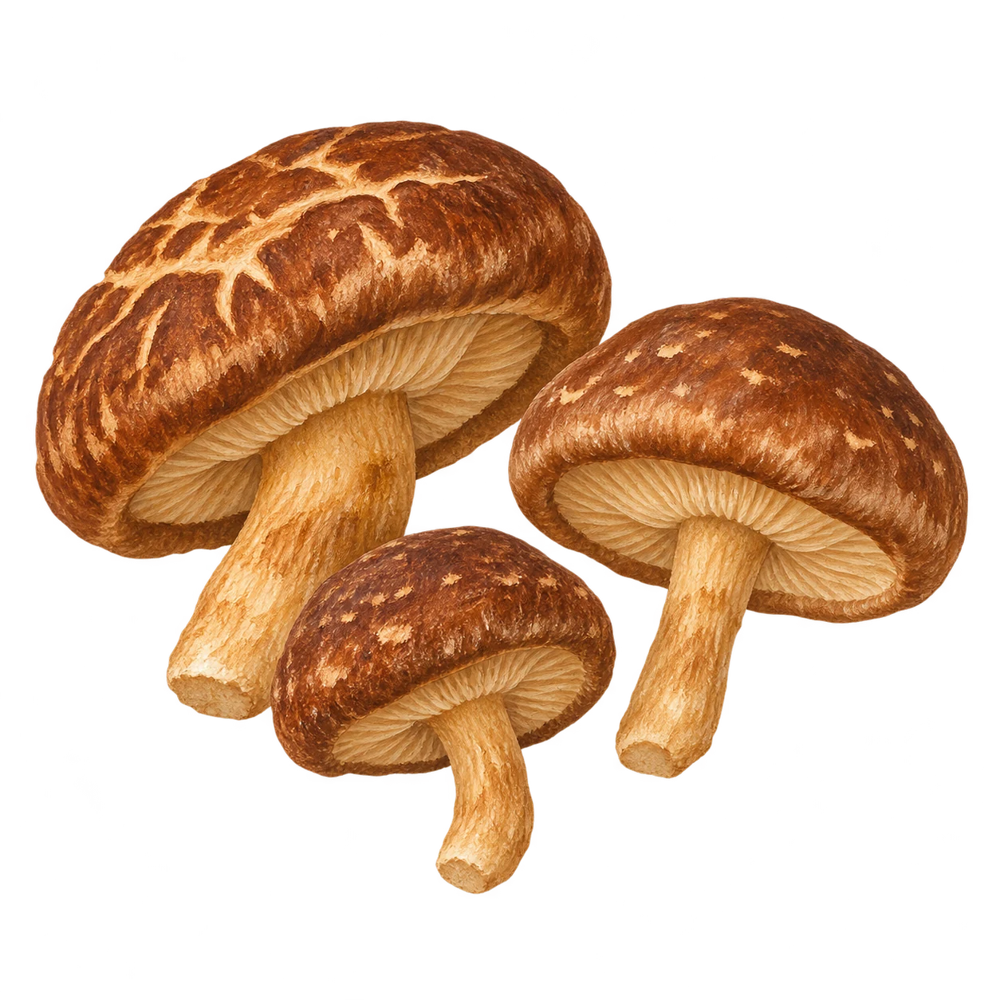
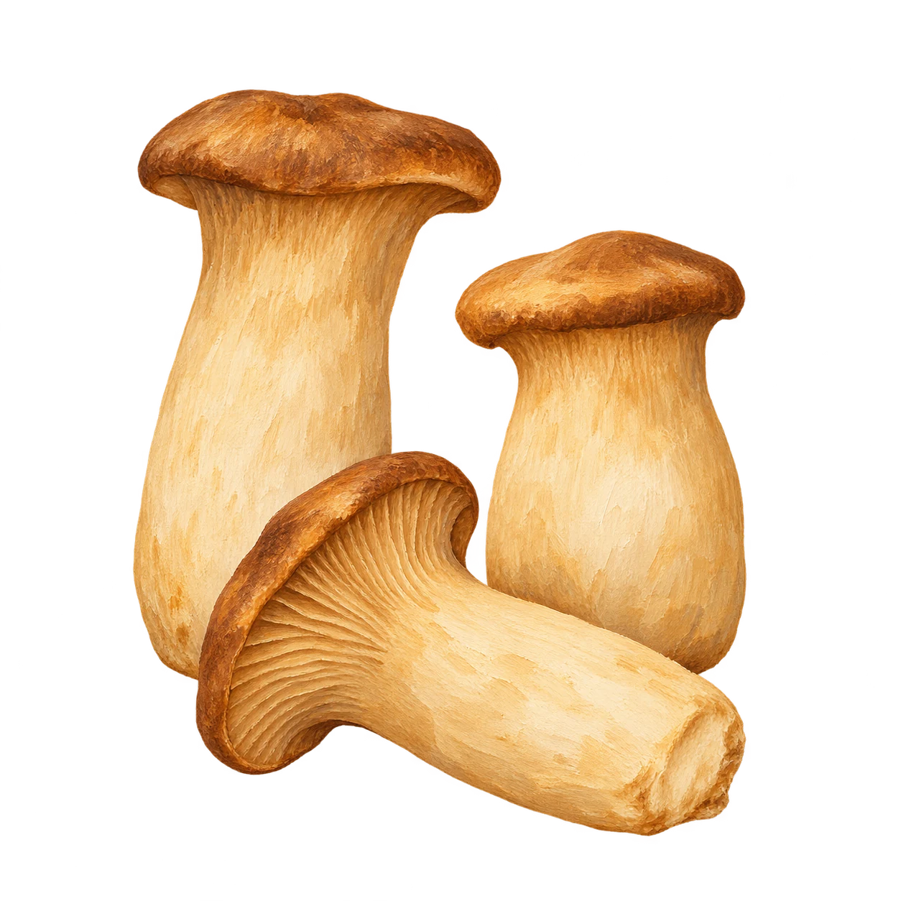
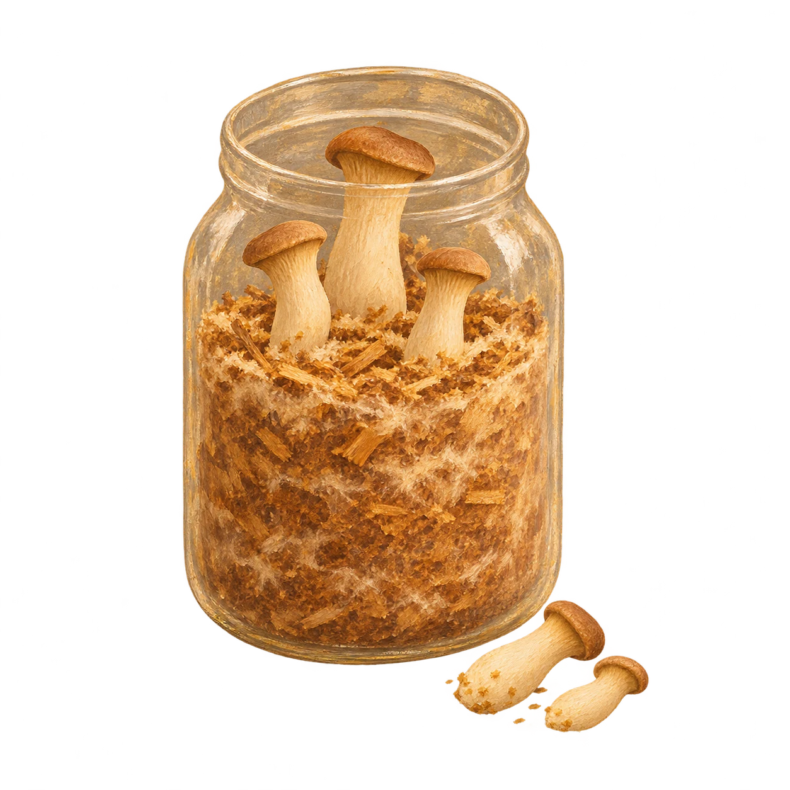
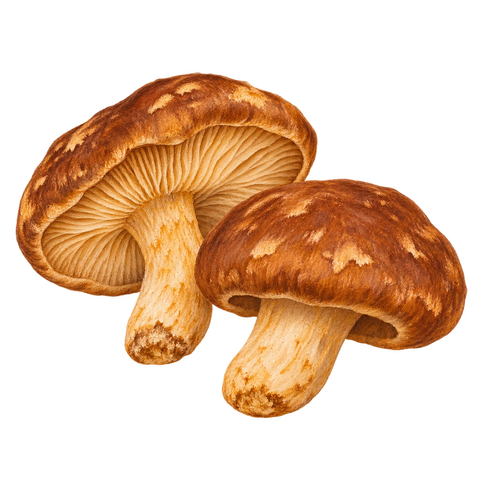

3 especies visibles.
Ninguna especie coincide con esa preparación.


Perfiles culinarios.[1]
Del cultivo a la cocina
La forma empieza antes del corte.
El diámetro de un sombrero o el grosor de un pie abren posibilidades distintas. Algunas de esas características se pueden explorar desde el cultivo.

Seleccionar la cepa
Dentro de una misma especie hay diferencias. En shiitake, las cepas pueden variar en tamaño y aspecto del sombrero. Compararlas permite buscar un perfil de producto antes de pensar en el corte.[3]

Trabajar la forma
En eryngii, la ventilación y el CO₂ influyen en el desarrollo del pie y del sombrero. Es una vía de ensayo para estudiar formatos de pieza; la respuesta depende de la cepa y del sistema de cultivo.[4]

Seleccionar los primordios
El raleo consiste en retirar parte de las setas jóvenes y dejar otras en desarrollo. Se utiliza en cultivo de eryngii y permite estudiar el calibre de las piezas que llegan a cocina.[5]

Elegir el momento de cosecha
En shiitake, la apertura del sombrero indica madurez; el tamaño por sí solo no la define. Registrar ese punto ayuda a comparar piezas con un estado de desarrollo semejante.[6]
Son posibilidades documentadas de cultivo. En Setas de la Peña, su adaptación a un plato requiere ensayos de cultivo y cocina antes de ofrecer un producto a medida.
Cortes y técnicas en cocina ↗